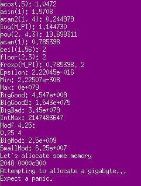
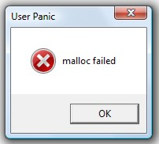

Tests the console, heap management and memory allocation on the device.


This example is included in the MoSync SDK installation in the /examples folder. For information on importing the examples into your workspace, see Importing the Examples.
The welcome screen (purple) should appear along with some text and a popup saying 'malloc failed'.
Without quoting all the text, it suffices to say it starts with 'Let's do some math...' and ends with 'Expect a panic'.
None of the keys should operate, only OK on the popup button.